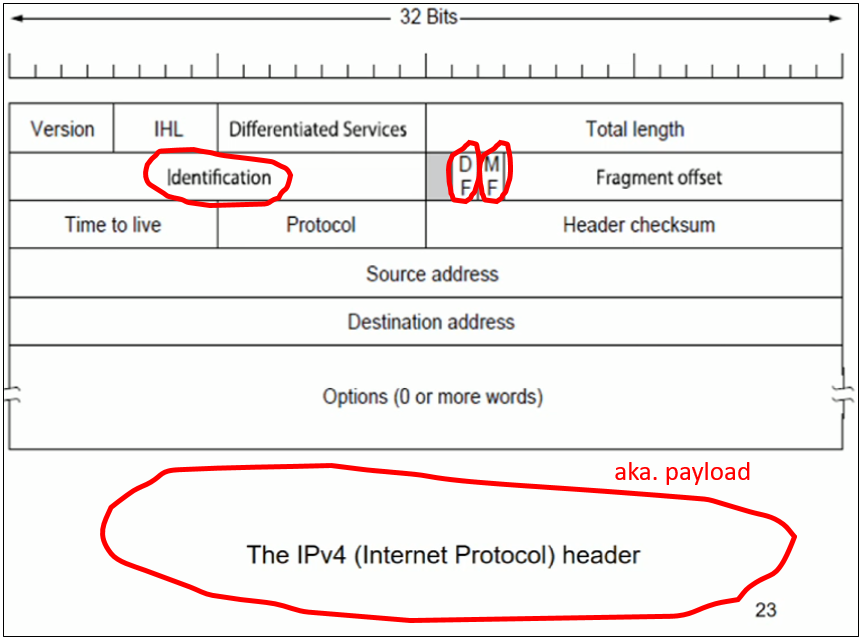

Packet Fragmentation
In the Internet routers break down packets into smaller fragments. This is known as 'Packet Fragmentation'.
There are two types of packet fragmentation:
- Transparent Fragmentation - routers reassembled at boundary
- Non-transparent Fragmentation - packet is only reassembled at destination.
Transparent Fragmentation
Routers reassembles the packet at boundary.
Receiver has no idea where the packet was changed, because it only gets the final version and is told nothing about how it was reassembled.
There are three problems with transparent-fragmentation:
- Computational work - each router does a lot of work - breaks packet into fragments, reassembles fragments into segments.
- Time delays - each router does a lot of work - breaks packet into fragments, reassembles fragments into segments.
- Fragments are repeatedly reassembled many times during transmission - each router does a lot of work - breaks packet into fragments, reassembles fragments into segments.
Basically the transparent approach is shit because it is a brute force version of packet fragmentation...
Due to these disadvantages we do not use it in The Internet.
Non-transparent Fragmentation
Packets are only reassembled once at the receiver/end destination.
This gives a more optimal solution compared to the transparent approach, since now we don't have to keep waiting at the router for all the fragments to appear!
There is 1 tiny-weeny problem with non-transparent fragmentation...
- If one fragment is lost, all fragments will be resent from the beginning again.
It's less of a problem really, but more of a solution to a potentially bad situation.
Let's do an example...
But firstly, before we jump straight into the example, we need to know the basic structure and important fields of a datagram
Figure 5.5a
Figure 5.5a is the structure of a datagram.
The fields circled in red are the important ones and will be used in the example:
- Identification - some unique packet ID to distinguish between packets.
- DF - starting bit-position of payload
- MF - 1 if the fragmnt is the final fragment, else 0
- payload - the data from the Transport layer
Example 1
Calculate and show your answers for fragmentation whn the elementary size is 1 byte:
a) Original packet, containing 10 bytes
b) Fragments after passing through a network with maximum size of 8 payload bytes plus header
c) Fragments after passing through a size 5 gateway
a)

final answer = 27 0 1 A B C D E F G H I J
b)

final answer= 27 0 0 A B C D E F G H 27 8 1 I J
c)

final answer= 27 0 0 A B C D E 27 5 F G H 27 8 1 I J
In parts b) and c) you may of noticed that the both fragments have the same ID as the original packet.
- This is intentional.
- It makes the reassembling process easier, since we can just group them all up based on their ID.
- Also if we loose one of the fragments and have to resend every fragment all over again, since they all have the same ID it'll be easy to do that.
In part c) all we had to do was truncate the length of each fragment whose length > 5
- The fragment whose payload was I J is clearly less than 5, so we didn't need to change that one.
- But the fragment whose payload was A B C D E F G H is clearly greater than 5, so we truncated it to 5 and created a new fragment to store F G H
No-fragmentation: path MTU discovery
Sooo apparently packet-fragmentation isn't actually used.
Researchers argued that fragmentation is too slow and tedious (I agree!!!) and that can be detrimental to performance because of:
- header overheads
- a whole packet is lost if any of its fragments are lost
We can avoid doing fragmentation all together by using Path MTU discovery.
Path MTU Discovery basically determines the max transmission unit (MTU) size on the network path between two IP hosts, usually with the goal of avoiding IP fragmentation.
They are built using the correct size in the first place, meaning we don't need to do fragmentation anymore.
Doing path MTU discovery may cause an extra delay at the beginning, because of all these calculations we have to do.
So basically, path MTU discovery allows us to calculate and use an optimal size.
Here are the steps involved in Path MTU discovery, for IPv4:
2) If a router receives a packet that is too large, it generates an error packet and returns it to the source, and drops the packet.
3) When the source receives the error packet, it uses the information inside to re-fragment the packet into pieces that are small enough for the router to handle.
4) Repeat steps 2 and 3 until the MTU becomes small enough to traverse the entire path without fragmentation.
5) We get an optimal MTU. Yay.